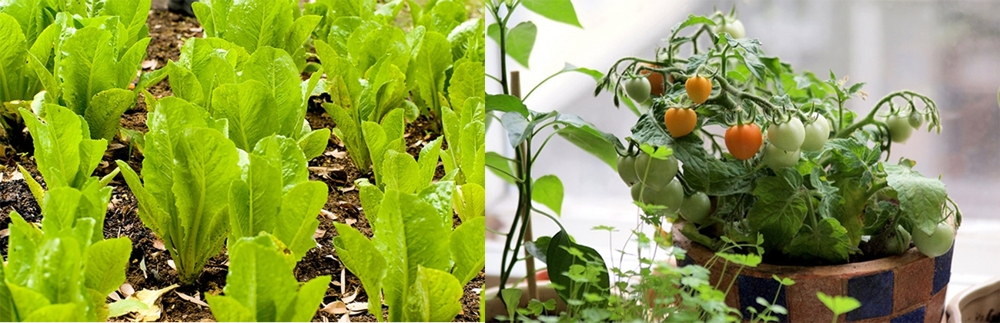
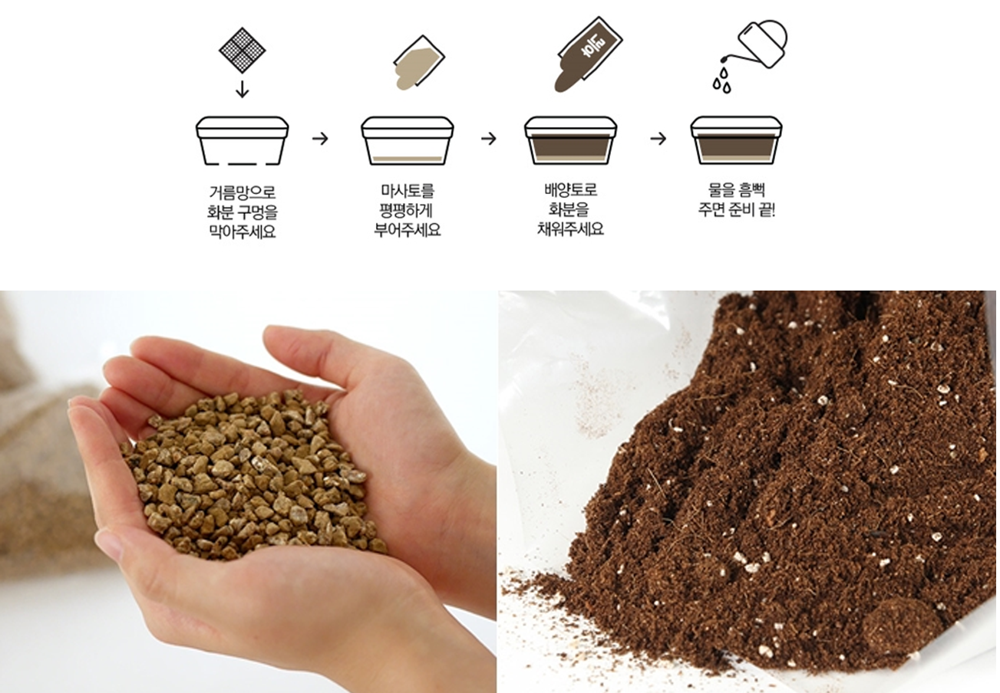
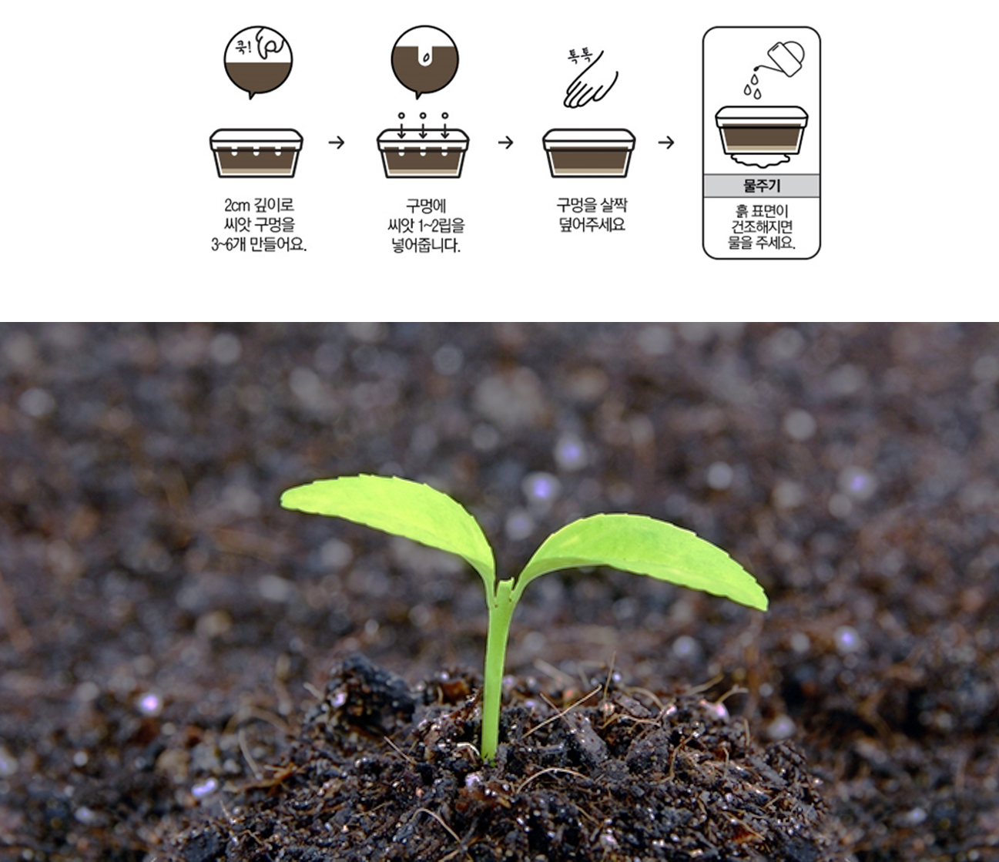

-
- 나만의 작은 텃밭을 만들어
자연의 신선함을 느껴보세요
- 저희 본 텃밭에서는 집에서도 자연의 아름다움을 느낄 수 있도록 채소, 과일, 허브 씨앗 및
기타 텃밭 관리 용품 등을 준비해 두었습니다
- 우리집 작은 본, 작은 텃밭 꾸미기
- 아파트에 사니 마당은 꿈도 못 꾸고, 주말농장은 멀고도 번거롭죠. 마트에서 파는 비싼 유기농 채소도 믿을 수가 없습니다.
고민 많은 현대인들 사이에서, 베란다나 옥상을 이용해 친환경 채소를 자급자족하는 ’시티파머(City Farmer)’가 대세랍니다.
베란다 텃밭 농사에 대한 관심을 증명하듯 씨앗이나 모종, 원예용품 등의 판매가 2013년 대비 약 50퍼센트 이상 증가했다고 하네요.
우리도 유행을 따라볼까요?
- Step1.무엇을 심을까요?
- 4, 5월은 베란다 농사를 시작하기 가장 좋은 계절입니다. 쌈채소나 잎채소는 3월 말부터, 열매채소인 고추, 토마토는 더울 때 잘 자라므로 4월 말이나
5월부터 가능하죠. 베란다에 햇빛이 잘 들면 로메인 상추나 방울토마토, 케일 등이 좋습니다. 보통이라면 청경채, 샐러리, 돌나물을 고르세요
햇빛이 적다면 치커리, 아욱, 쪽파 등이 잘 자란답니다.
베란다 농사에 처음 도전한다면 쌈채소로 시작해 보세요. 물만 제때 주면 되고, 한두 달 만에 수확이 가능하답니다. 열매채소는 조금 관리가 필요한데요.
큰 화분에 심어 웃거름을 주고, 꽃이 피면 줄기를 툭툭 치거나 붓으로 비벼 인공수분을 해줘야 합니다.
열매를 수확하기 위해서는 대략 5개월 정도 소요된다고 합니다.
- 
- Step2.텃밭을 준비해봅시다!
- 베란다에 텃밭을 꾸미기 위해서는 먼저 흙과 씨앗을 품을 화분이 필요한데요. 저렴한 플라스틱, 튼튼한 스티로폼, 나무 상자 등 무엇이든 좋아요.
자신의 베란다에 맞는 적당한 크기의 화분을 준비해 주세요. 참, 물이 빠지도록 밑에 배수구멍을 뚫어주는 걸 잊지 마세요.
다음은 흙이 있어야겠죠. 화분 밑바닥의 배수구멍에 거름망 또는 자갈을 깔고, 마사토를 덮어주세요. 마사토는 화강암이 풍화되어 생성된 굵은
흙으로, 원활한 배수를 도와 작물의 성장을 돕습니다. 마사토 위에는 좋은 양분들이 배합된 배양토나 상토를 덮어주는데요. 산에서 흙을 퍼오면
벌레와 병충해도 함께 올 수 있으니, 되도록 화원에서 구입하는 게 좋아요.
- 
- Step3.씨앗을 심어보아요!
- 베란다에 나만의 텃밭이 준비되었다면, 이제 씨앗을 심어볼까요? 씨앗은 심기 전, 하룻밤 정도 미지근한 물에 담가 불려서 심으면 훨씬 씨앗의
발아가 빠르다고 하니 미리 준비해 보세요. 우선 평평하게 만든 흙 위에 손가락으로 한 마디 정도인 2~3 cm 깊이로 씨앗 구멍을 만들어 주세요.
화분 길이에 맞게 적당한 너비로 씨앗 구멍을 만들고, 한 구명에 씨앗 1~2 립을 넣어줍니다.
씨앗을 넣은 구멍은 씨앗의 2~3 배 크기 정도 흙을 살짝 덮어주면 되는데요. 흙을 너무 많이 올리거나, 꾹꾹 눌러 덮을 경우 새싹이 올라오기
힘들기 때문에 주의해 주세요. 마지막으로 화분에 물을 충분히 주면 되는데요. 이때 분무기나 물조리개를 이용하여야 흙이 파이지 않고, 고르게
물을 뿌릴 수 있답니다. 씨앗에 따라 심는 방법이 다를 수 있으니, 꼭 설명서를 읽어 보세요.
- 